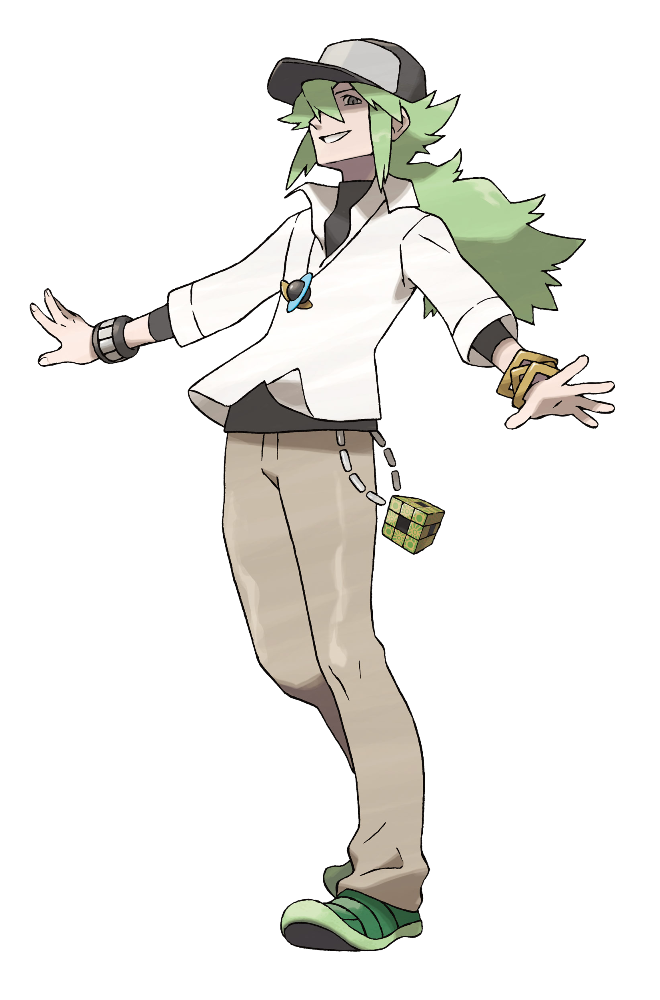
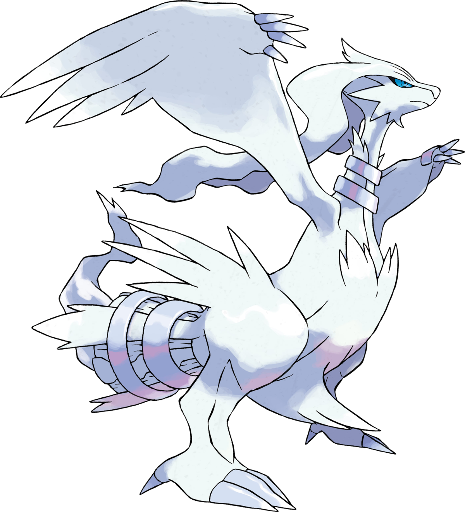

POKEMON NOIR ET BLANC
Pokémon Noir et Blanc est un jeu vidéo de rôle développé par Game Freak et publié par Nintendo et The Pokémon Company pour la console portable Nintendo DS. Il s'agit de la cinquième génération de la série principale des jeux Pokémon, sortie au Japon en septembre 2010, en Amérique du Nord en mars 2011, en Australie en juin 2011 et en Europe en mars 2011. Le jeu se déroule dans la région d'Unys, inspirée de la ville de New York, et introduit 156 nouveaux Pokémon, portant le total à 649. Le joueur incarne un jeune dresseur de Pokémon qui part à l'aventure pour devenir le champion de la Ligue Pokémon tout en affrontant une organisation criminelle appelée la Team Plasma. Le jeu a été bien accueilli pour ses graphismes améliorés, son scénario plus mature et ses nouvelles fonctionnalités, telles que les combats triples et les combats rotatifs.

N, de son vrai nom Natural Harmonia Gropius, est un personnage fictif de l'univers Pokémon, apparaissant principalement dans les jeux vidéo Pokémon Noir et Blanc ainsi que dans leurs suites, Pokémon Noir 2 et Blanc 2. N est le roi de la Team Plasma, une organisation qui cherche à libérer les Pokémon de l'emprise des humains. Contrairement à la plupart des antagonistes de la série, N est un personnage complexe avec des motivations nuancées. Il croit sincèrement que les Pokémon devraient être libres et non utilisés comme des outils par les humains. Tout au long des jeux, N remet en question les actions du joueur et ses propres croyances, ce qui conduit à des confrontations philosophiques sur la relation entre les humains et les Pokémon. N est également connu pour son apparence distinctive, avec ses cheveux verts et ses yeux bleus, ainsi que pour son comportement calme et réfléchi.

Reshiram est un Pokémon légendaire de type Dragon et Feu, introduit dans la cinquième génération de jeux Pokémon (Pokémon Noir et Blanc). Il est connu comme le "Pokémon Vérité" et est souvent associé à son homologue Zekrom, le "Pokémon Idéal". Reshiram a l'apparence d'un grand dragon blanc avec des ailes majestueuses et une queue en forme de turbine. Selon la mythologie du jeu, Reshiram a le pouvoir de brûler tout ce qui est faux et de révéler la vérité. Dans les jeux, Reshiram joue un rôle central dans l'intrigue de Pokémon Noir et Blanc, où il est recherché par le protagoniste et N, le chef de la Team Plasma. Reshiram est également connu pour sa capacité signature, "Souffle Draconic", qui inflige des dégâts importants aux adversaires. En plus des jeux vidéo, Reshiram apparaît dans divers médias Pokémon, y compris l'anime et les cartes à jouer.

Zekrom est un Pokémon légendaire de type Dragon et Électrik, introduit dans la cinquième génération de jeux Pokémon (Pokémon Noir et Blanc). Il est connu comme le "Pokémon Idéal" et est souvent associé à son homologue Reshiram, le "Pokémon Vérité". Zekrom a l'apparence d'un grand dragon noir avec des ailes puissantes et une queue en forme de générateur électrique. Selon la mythologie du jeu, Zekrom a le pouvoir de créer de l'électricité et de renforcer les idéaux des personnes. Dans les jeux, Zekrom joue un rôle central dans l'intrigue de Pokémon Noir et Blanc, où il est recherché par le protagoniste et N, le chef de la Team Plasma. Zekrom est également connu pour sa capacité signature, "Fulguro-Lance", qui inflige des dégâts importants aux adversaires. En plus des jeux vidéo, Zekrom apparaît dans divers médias Pokémon, y compris l'anime et les cartes à jouer.